1과목: 응용역학
1. 그림과 같은 정정 트러스에서 D1부재(AC)의 부재역은?
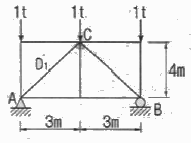
2. 기둥의 길이가 3.5m이고 단면이 10cm x 15cm 인 직사각형이라면 이 기둥의 세장비는?
3. 그림과 같이 두 개의 활차를 사용하여 물체를 매달 때 3개의 물체가 평형을 이루기 위한 각 θ값은? (단, 로프와 활차의 마찰은 무시한다.)
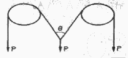
4. 그림과 같이 단순보 위에 삼각형 분포하중이 작용하고 있다. 이 단순보에 작용하는 최대 휨모멘트는?
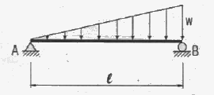
5. 그림과 같은 트러스의 C점에 300kg의 하중이 작용할 때 C점에서의 처짐을 계산하면? ( 단, E=2×106kg/cm2, 단면적 1cm2)
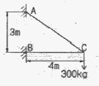
6. 다음 그림과 같은 변단면 Cantilever 보 A점의 처짐을 구하면?
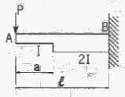
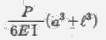
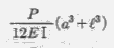
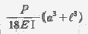
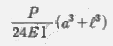
7. 아래 그림과 같은 캔틸레버 보에서 B점의 연직변위(δB)는? (단, M0=0.4tㆍm, P=1.6t, L=2.4m, EI=600tㆍm2이다. )
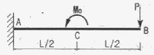
8. 단면의 성질에 대한 다음 설명 중 잘못된 것은?
9. 다음 구조물에서 하중이 작용하는 위치에서 일어나는 처짐의 크기는?
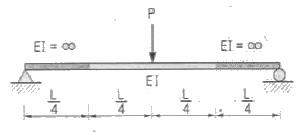
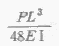
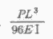
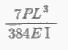
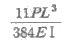
10. 그림과 같이 X, Y축에 대칭인 빗금친 단면에 비틀림우력 5tㆍm가 작용할 때 최대전단응력은?
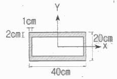
11. 다음 그림(A)와 같이 하중을 받기전에 지점 B와 보사이에 △의 간격이 있는 보가 있다. 그림(B)와 같이 이보에 등분포하중 q를 작용시켰을 때 지점 B의 반력이 qℓ이 되게 하려면 △의 크기를 얼마로 하여야 하는가? (단, 보의 휨강도 EI는 일정하다.)
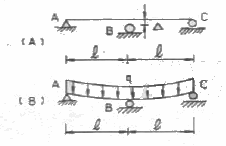
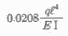
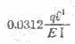
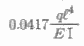
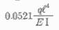
12. 다음 그림과 같이 2경간 연속보의 첫 경간에 등분포하중이 작용한다. 중앙지점 B의 휨모멘트는?
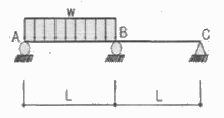
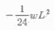
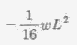
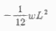
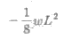
13. 평면응력을 받는 요소가 다음과 같이 응력을 받고 있다. 최대 주응력은?
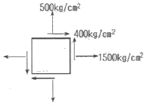
14. 직경 50mm, 길이 2m의 봉이 힘을 받아 길이가 2mm늘어났다면, 이 때 이 봉의 직경은 얼마나 줄어드는가? (단, 이 봉의 포아송(Poisson＇s)비는 0.3이다.)
15. 그림과 같은 라멘에서 A점의 수직반력(RA)은?
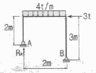
16. 다음 그림과 같은 내민보에서 C점의 처짐은? (단, 전 구간의 EI=3.0×109kg ㆍ cm2)
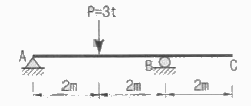
17. 그림과 같이 2개의 집중하중이 단순보 위를 통과할 때 절대최대 휨모멘트의 크기와 발생위치 x는?
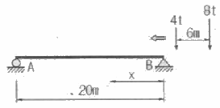
18. 동일한 재료 및 단면을 사용한 다음 기둥 중 좌굴하중이 가장 큰 기둥은?
19. 그림과 같은 도형에서 빗금친 부분에 대한 x, y축의 단면 상승모멘트(Ixy)는?
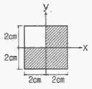
20. 그림과 같이 속이 빈 직사각형 단면의 최대 전단 응력은? (단, 전단력은 2t)
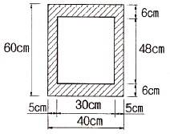
2과목: 측량학
21. UTM 좌표(universal transverse mercatorcoordinates)에 대한 설명으로 옳은 것은?
22. 비행고도 2500m, 초점거리 150mm의 사진기로 촬영한 수직사진에서 비고 60m의 산정이 주점으로부터 5.0cm인 곳에 찍혀 있을 때 비고에 의한 기본변위는?
23. 수평각관측법 중 가장 정확한 값을 얻을 수 있는 방법으로 1등 삼각측량에 이용되는 방법은?
24. 일반적으로 단열삼각망으로 구성하기에 가장 적합한 것은?
25. 완화곡선의 성질에 대한 설명으로 옳지 않은 것은?
26. 기지점 A에 평판을 세우고 B점에 수직으로 표척을 세워 시준하여 눈금 12.4와 9.3을 얻었다. 표척 실제의 상하간격이 2m일 때 AB 두 지점의 거리는?
27. 지성선에 관한 설명으로 옳지 않은 것은?
28. 그림과 같이 △P1P2C는 동일 평면상에서 α1=62˚ 8´, α2=56˚ 27´, B=95.00m 이고 연직각 ν1=20˚ 46´ 일 때 C로부터 P까지의 높이 H는?
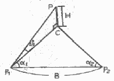
29. 지구의 물리측정에서 지자기의 방향과 자오선이 이루는 각을 무엇이라 하는가?
30. 축척 1:1500 도면상의 면적을 축척 1:1000으로 잘못알고 면적을 측정하여 24000m2를 얻었을 때 실제 면적은?
31. 그림과 같은 유토곡선(mass curve)에서 하향구간이 의미하는 것은?
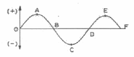
32. 직사각형의 두변의 길이를 1/1000 정밀도로 관측하여 면적을 산출할 경우 산출된 면적의 정밀도는?
33. 종단면도에 표기하여야 하는 사항으로 옳지 않은 것은?
34. 트래버스 측점 A의 좌표가 (200, 200)이고, AB측선의 길이가 100m일 때 B점의 좌표는? (단, AB의 방위각은 195˚ 이고, 좌표의 단위는 m 이다.)
35. 초점거리 150mm 사진기로 촬영고도 5250m에서 사진크기 23cm x 23cm 사진을 얻었다. 이 사진의 입체시 모델에서 좌측 사진에 의한 기선장은 103mm, 우측 사진에 의한 기선장은 104mm이었다면 사진의 종중복도는?
36. 도로시점에서 교점까지의 거리가 325.18m이고 곡선의 반지름이 150m, 교각이 42˚인 단곡선을 편각법으로 설치할 때, 시단현의 편각은? (단, 중심말뚝간격은 20m이다. )
37. M의 표고를 구하기 위하여 수준점(A, B, C)으로부터 고저측량을 실시하여 표와 같은 결과를 얻었다면 M의 표고는?
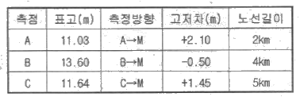
38. 하천에서 2점법으로 평균유속을 구할 경우 관측하여야 할 두 지점의 위치는?
39. 다각측량의 폐합오차 조정방법 중 트랜싯법칙에 대한 설명으로 옳은 것은?
40. 어떤 측선의 길이를 3인(A, B, C)이 관측하여 아래와 같은 결과를 얻었을 때 최확값은?
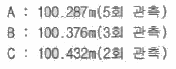
3과목: 수리학 및 수문학
41. 완경사 수로에서 배수곡선(M1)이 발생할 경우 각 수심간의 관계로 옳은 것은? (단, 흐름은 완경사의 상류흐름 조건이고, y: 측정수심, yn: 등류수심, yc: 한계수심)
42. 물체의 공기 중 무게가 750N(75kg)이고 물속에서의 무게는 150N(kg)일 때 이 물체의 체적은? (단, 무게 1kg=10N)
43. 구형물체(球形物體)에 대하여 stokes의 법칙이 적용되는 범위에서 항력계수(CD)는? (단, Re : Reynolds 수)
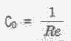
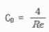
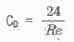
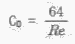
44. 그림과 같은 수압기에서 B점의 원통의 무게가 2000N(200kg), 면적이 500cm2이고 A점의 원통의 면적이 25cm2이라면, 이들이 평형상태를 유지하기 위한 힘 P의 크기는? (단, A점의 원통 무게는 무시하고 관내 액체의 비중은 0.9이며, 무게 1kg=10N 이다.)
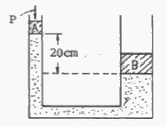
45. 그림과 같은 유역(12㎞ x 8㎞)의 평균강우량을 Thiessen방법으로 구한 값은? (단, 1, 2, 3, 4번 관측점의 강우량은 각각 140, 130, 110, 100mm이며, 작은 사각형은 2㎞ x 2㎞의 정4각형으로서 모두 크기가 동일하다. )
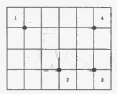
46. 지름 2m인 원형 수조의 측벽 하단부에 지름 50mm의 오리피스가 설치되어 있다. 오리피스 중심으로부터 수위를 50cm로 유지하기 위하여 수조에 공급해야할 유량은? (단, 유출구의 유량계수는 0.75 이다. )
47. 직각 삼각형 위어에서 월류수심의 측정에 1%의 오차가 있다고 하면 유량에 발생하는 오차는?
48. Darcy의 법칙(V=KI)에 대한 설명으로 옳은 것은?
49. 대기의온도 t1, 상대습도 70%인 상태에서 증발이 진행되었다. 온도가 t2로 상승하고 대기 중의 증기압이 20% 증가하였다면 온도 t1 및 t2에서의 포화 증기압이 각각 10.0mmHg 및 14.0mmHg라 할 때 온도 t2에서의 상대습도는 약 얼마인가?
50. 단위 유량도 작성시 필요없는 사항은?
51. 그림과 같이 유량이 Q, 유속이 V인 유관이 받는 외력 중에서 y축 방향의 힘(Fy)에 대한 계산식으로 옳은 것은? (단, p : 단위밀도, θ1 및 θ1≤90˚ , 마찰력은 무시함)
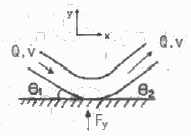
52. 원형 댐의 월류량이 400m3/sec 이고 수문을 개방하는데 필요한 시간이 40초라 할 때 1/50 모형(模形)에서의 유량과 개방 시간은? (단, gr은 1로 가정한다. )
53. 폭 5m인 직사각형 수로에 유량 8m3/sec가 80㎝의 수심으로 흐를 때, Froude 수는?
54. 유출에 대한 설명 중 틀린 것은?
55. 그림과 같은 굴착정(artesian well)의 유량을 구하는 공식은? (단, R:영향원의 반지름, m:피압대수층의 두께, K:투수계수)
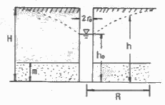
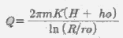
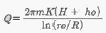
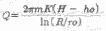
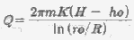
56. DAD(Depth-area-duration)해석에 관한 설명 중 옳은 것은?
57. 개수로에서 도수가 발생할 때 도수 전의 수심이 0.5m 유속이 7m/sec 이면 도수 후의 수심은?
58. 물이 단면적, 수로의 재료 및 동수경사가 동일한 정사각형관과 원관을 가득차서 흐를 때 유량비
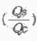
는? (단, Qs : 정사각형관의 유량, Qc : 원관의 유량, Manning 공식을 적용)59. 그림에서 A점(관내)에서의 압력에 대한 설명으로 옳은 것은? (단, B점은 수면에 위치)
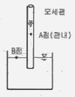
60. 에너지 보정계수(α)와 운동량 보정계수(β)에 대한 설명으로 옳지 않은 것은?
4과목: 철근콘크리트 및 강구조
61. bw=350mm, d=600mm인 단철근 직사각형보에서 콘크리트가 부담할 수 있는 공칭 전단 강도를 정밀식으로 구하면 약 얼마인가? (단, Vu=100kN, Mu=300kNㆍm, ρw=0.016, fcκ=24MPa)
62. 복철근 콘크리트 단면에 인장철근비는 0.02, 압축철근비는 0.01 이 배근된 경우 순간처짐이 20mm일 때 6개월이 지난 후 총 처짐량은? (단, 작용하는 하중은 지속하중이며 저속하중의 6개월 재하기간에 따르는 계수 ξ는 1.2 이다. )
63. 강도설계법에서 강도감소계수를 사용하는 이유에 대한 설명으로 틀린 것은?
64. 그림과 같은 정사각형 확대 기초에서 2방향 작용의 전단을 고려할 때 위험단면에서의 최대 전단력은? (단, 지반의 허용지지력은 171kN/m2, 기초판의 유효높이 d=520mm, 그림에서 치수의 단위는 mm이고, 기초의 자중은 무시한다. )
65. 철근콘크리트 부재에서 전단철근이 부담해야할 전단력이 300kN일 때 부재축에 직각으로 배치된 전단철근의 최대간격으로 옳은 것은? (단, 간격(s)내의 전단철근의 단면적 Av=700mm2, fy=350MPa, fcκ=28MPa, bw=400㎜, d=560㎜)
66. 나선철근 압축부재 단면의 심부지름이 400㎜, 기둥단면 지름이 500㎜ 인 나선철근 기둥의 나선철근비는 최소 얼마 이상이어야 하는가? (단, 나선철근의 설계기준항복강도(fyt)=400MPa, fcκ=21MPa)
67. 부분 프리스트레싱(partial prestressing)에 대한 설명으로 옳은 것은?
68. 그림의 단순지지 보에서 긴장재는 C점에 150㎜의 편차에 직선으로 배치되고, 1000kN 으로 긴장되었다. 보의 고정하중은 무시할 때 C점에서의 휨 모멘트는 얼마인가? (단, 긴장재의 경사가 수평압축력에 미치는 영향 및 자중은 무시한다. )
69. 다음은 L형강에서 인장응력 검토를 위한 순폭계산에 대한 설명이다. 틀린 것은?
70. 그림과 같은 용접부에 작용하는 응력은?
71. 철근콘크리트 강도설계에 있어서 안전을 위한 강도감소계수 Ø의 규정값으로 틀린 것은?
72. 철근콘크리트 구조물에서 연속 휨부재의 부모멘트 재분배를 하는 방법에 대한 다음 설명 중 틀린 것은?
73. 부재의 최대모멘트 Ma와 균열모멘트 Mcr의 비(Me/Mcr)가 0.95인 단순보의 순간처짐을 구하려고 할 때 사용되는 유효단면2차모멘트(Ie)의 값은? (단, 철근을 무시한 중립축에 대한 총단면의 단면2차모멘트는 Ig=540000㎝4이고, 균열 단면의 단면2차모멘트 Icr=345080㎝4이다. )
74. 직사각형 단면의 보에서 계수 전단력 Vu=36kN을 콘크리트만으로 지지하고자 할 때 필요한 최소의 bwd는 얼마인가? (단, fcκ=25MPa)
75. 옹벽의 구조해석에 대한 설명으로 틀린 것은?
76. 철근의 겹침이음에서 A급 이음의 조건에 대한 설명으로 옳은 것은?
77. 프리스트레스의 손실 원인 중 프리스트레스 도입 후 시간이 경과 함에 따라서 생기는 것은 어느 것인가?
78. 복철근 직사각형보에서 다음 주어진 조건에 대하여 등가압축응력의 깊이 a는 약 얼마인가? (단, bw=350㎜, d=550㎜, As=1935mm2, As´=860mm2, fcκ=21MPa, fy=300MPa)
79. bw=300㎜, d=450㎜인 단철근 직사각형 보의 균형철근량은 약 얼마인가? (단, fcκ=35MPa, fy=300MPa이다.)
80. 철근콘크리트 기둥의 연결부에서 단면치수가 변하는 경우 옵셋 굽힘철근을 배근하여야 하는데 이 옵셋 굽힘철근 사용에 대한 다음 설명 중 틀린 것은?
5과목: 토질 및 기초
81. 흙의 종류에 따른 아래 그림과 같은 다짐곡선에서 해당하는 흙의 종류로 옳은 것은?
82. 함수비 14%의 흙 2218g이 있다. 이 흙의 함수비를 23%로 하려면 몇g의 물이 필요한가?
83. 연약지반 처리공법중 sand drain 공법에서 연직과 방사선방향을 고려한 평균 압밀도 U는? (단, Uv=0.20, UR=0.71이다.)
84. 어떤 지반에 대한 토질시험결과 점착력 c=0.50kg/cm2, 흙의 단위중량 r=2.0t/m3이었다. 그 지반에 연직으로 7m를 굴착했다면 안전율은 얼마인가? (단, Ø=0 이다. )
85. 압밀에 관련된 설명으로 잘못된 것은?
86. 다음은 정규압밀점토의 삼축압축 시험결과를 나타낸 것이다. 파괴시의 전단응력 τ와 수직응력 σ를 구하면?
87. 어느 모래층의 간극률이 35%, 비중이 2.66 이다. 이 모래의 Quick Sand에 대한 한계동수구배는 얼마인가?
88. 그림과 같이 지표면에서 2m부분이 지하수위이고, e=0.6, Gs=2.68 이고 지표면까지 모관현상에 의하여 100% 포화되었다고 가정하였을 때 A점에 작용하는 유효응력의 크기는 얼마인가?
89. 높이 15cm, 지름 10cm인 모래시료에 정수위 투수 시험한 결과 정수두 30cm로 하여 10초간의 유출량이 62.8cm3이었다. 이 시료의 투수계수는?
90. 어떤 모래의 건조단위중량이 1.7t/m3이고, 이 모래의 rdmax = 1.8t/m3 , rdmin = 1.6t/m3이라면, 상대밀도는?
91. 연약점성토층을 관통하여 철근콘크리트 파일을 박았을때 부마찰력(Negative friction)은? (단, 이때 지반의 일축압축강도 qu=2t/m2, 파일직경 D=50cm, 관입깊이 ℓ=10m 이다. )
92. 포화 점토에 대해 베인전단시험을 실시하였다. 베인의 직경과 높이는 각각 7.5cm와 15cm이고 시험 중 사용한 최대 회전모멘트는 250kgㆍcm이다. 점성토의 액성한계는 65%이고 소성한계는 30%이다. 설계에 이용할 수 있도록 수정비배수 강도를 구하면? (단, 수정계수(μ)=1.7-0.54log(PI)를 사용하고, 여기서, PI는 소성지수이다. )
93. 다음 그림과 같은 점성토 지반의 굴착저면에서 바닥융기에 대한 안전율을 Terzaghi의 식에 의해 구하면? (단, r=1.731t/m3 , c=2.4t/m2 이다. )
94. 모래치환법에 의한 흙의 들밀도 시험결과, 시험구멍에서 파낸 흙의 중량 및 함수비는 각각 1800g, 30%이고, 이 시험구멍에 단위중량이 1.35g/cm3인 표준모래를 채우는데 1350g이 소요되었다. 현장 흙의 건조단위중량은?
95. 정규압밀점토에 대하여 구속응력 1kg/cm2로 압밀배수 시험한 결과 파괴시 축차응력이 2kg/cm2이었다. 이 흙의 내부마찰각은?
96. 다음 그림의 파괴포락선 중에서 완전포화된 점토를 UU(비압밀 비배수)시험했을 때 생기는 파괴포락선은?
97. 표준관입시험(SPT)을 할 때 처음 15cm 관입에 요하는 N값은 제외하고, 그 후 30cm 관입에 요하는 타격수로 N값을 구한다. 그 이유로 가장 타당한 것은?
98. 다음 중 직접기초의 지지력 감소요인으로서 적당하지 않은 것은?
99. 강도정수가 c=0, Ø=40˚ 인 사질토 지반에서 Rankine 이론에 의한 수동토압계수는 주동토압계수의 몇 배인가?
100. 아래 그림에서 투수계수 K = 4.8 X 10-3cm/sec 일 때 Darcy 유출속도 v 와 실제 물의 속도(침투속도) vs 는?
6과목: 상하수도공학
101. 효율이 0.8인 펌프 2대를 이용하여 취수탑에서 100000m3/일의 수량을 20m 높이에 있는 도수로에 끌어올리려 한다. 펌프 한 대의 소요동력은?
102. 침전지의 수심이 4m이고 체류시간이 2시간일 때 이 침전지의 표면부하율(Surface loading rate)은?
103. 하수도 계획 중 계획우수량 산정시 확률년수는 몇 년을 원칙으로 하는가?
104. 유입 하수량 20000m3/day, 폭기조 유입수의 BOD 농도를 140mg/L, BOD제거율을 90%로 할 경우 송기량은? (단, 산소 1kg에 대해 필요한 공기량은 3.5m3이고 생화학적 반응에 이용되는 공기량은 공급량의 7%로 가정한다. )
1⑤. 하수도 시설 설계시 우수유출량의 산정을 합리식으로 할 때 토지이용도별 기초 유출계수의 표준값이 가장 작은 것은?
106. 물이 상수관망에서 한쪽 방향으로만 흐르도록 할 때 사용하는 밸브는?
107. 관거별 계획하수량에 대한 설명으로 옳지 않은 것은?
108. 하수관거의 접합 중에서 굴착 깊이를 얕게 함으로 공사비용을 줄일 수 있으며, 수위상승을 방지하고 양정고를 줄일 수 있어 펌프로 배수하는 지역에 적합한 방법은?
109. 정수 처리에서 염소소독을 실시할 경우 물이 산성일수록 살균력이 커지는 이유는?
110. 펌프의 회전수 N=3000rpm, 양수량 Q=1.5m3/min, 전양정 H=300m인 5단 원심펌프의 비회전도는 Ns는?
111. 슬러지 용적지수 (SVI)에 관한 설명 중 옳지 않은 것은?
112. 하수의 생물학적 처리법 중 산화구법(oxidation ditchprocess)이 속하는 처리법은?
113. 펌프대수를 결정할 때 일반적인 고려사항에 대한 설명으로 옳지 않은 것은?
114. 토사유입의 가능성이 높은 하천의 취수탑에 의한 취수시 취수구의 단면적을 결정하기 위한 유입속도는 얼마를 표준으로 하는가?
115. 상수 취수시설에 있어서 침사지의 유효수심은 얼마를 표준으로 하는가?
116. 상수도 시설의 규모 결정에 기초가 되는 계획 1일 최대급수량이 20000m3이라 할 때 일반적인 계획취수량은 얼마 정도인가?
117. 상수도의 배수관 설계시에 사용하는 계획배수량은?
118. 공동현상(cavitation)의 방지책에 대한 설명으로 옳지 않은 것은?
119. 상수도의 오염물질별 처리방법으로 옳은 것은?
120. 하수도시설의 일차침전지에 대한 설명으로 옳지 않은 것은?